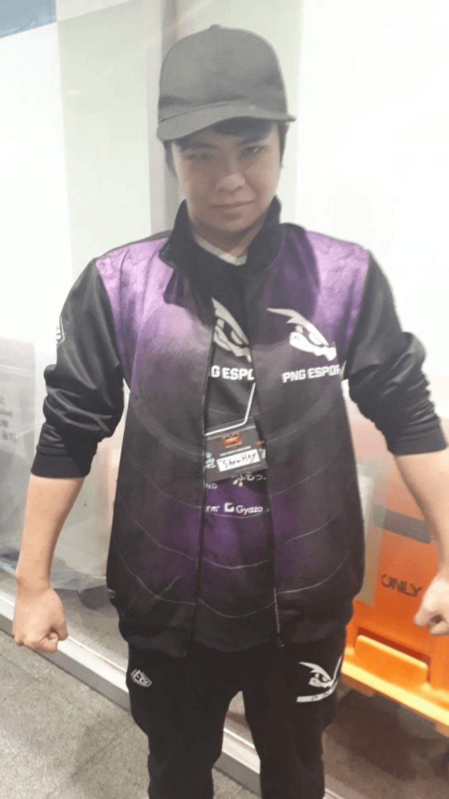
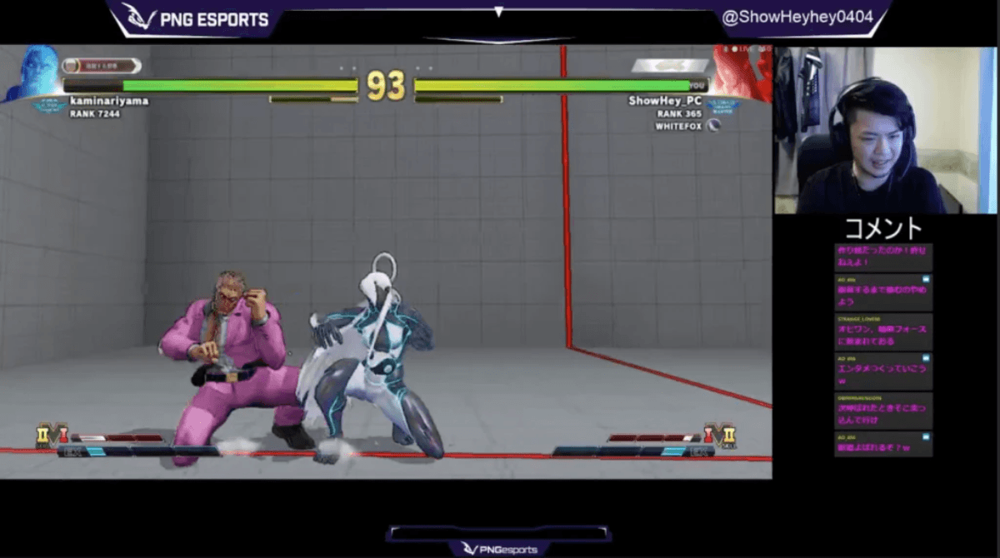

今回は自衛隊員を志していたShowHey選手がどうしてプロゲーマーになったのか、プロとしての意識などを深くまで掘り下げた。
格闘ゲームとの出会い
-まずは簡単な自己紹介をお願いいたします。
PNG esportsストリートファイーター部門所属のShowHeyです。年齢は今年で22歳です。
-格闘ゲームを始めたきっかけを教えてください。
僕は元々ゲームは好きだったんですけど最初はプロになろうという気は更々なかったです。昔はポケモン等の一人でやるゲームをやっていたんですけど、結構飽き性であまり長くは続かなかったんですよね。そこで次にやるゲームは長く続けようと思いギルティギアを始めたんですよ、そしたら青天の霹靂というか(笑)、とにかく衝撃的でしたね。格闘ゲームって単純なゲームルールなんですけど、実はキャラクターの個性やコンボ、相手との心理戦など結構奥が深いんです。
-その後はどのような経緯でストリートファイターのプロ選手になったんですか？
その後スマブラやストリートファイター等、色々な格闘ゲームを触っているうちにウメハラ選手がプロとして活動しているのを知りました。その競技シーンをみているうちに、この熱いゲームでプロゲーマーを目指して見るのは面白いんじゃないかと思いました。当時は自衛隊員を目指していたんですがその採用を蹴ってプロゲーマー育成専門学校へ行くことにしました。
プロゲーマー育成専門学校での苦悩
-プロゲーマー育成専門学校へ通われていたんですね。
当時は地元から都内の学校へ通っていたので片道3時間かかってしまいゲームをする時間があまりなかったんですけど、学校に行くことによって学べることは沢山あるんじゃないかなと思って通いました。大会で結果も出ず、満足に練習時間も確保できなかったので覚悟はしていたんですけど心が折れかけてしまう時期もありました。ただ普段時間がない分休日は猛練習をし、結果的には2年生の時にとあるチームに声をかけてもらいプロになることができました。
-プロゲーマーを志した時の周囲の反応はどうでしたか？
最初は親に「ふざけんな」と怒鳴られましたね（笑）。ただ自分から進んで物事をやるということをあまりやってこなかったので、学校やイベントで選手やスタッフにどうやって親を説得するかを聞き出してなんとか説得できたという感じです（笑）
ShowHey選手のプロ理論
– 一つのゲームをやり続けていると飽きてしまうこともあると思うんですけどそうならないための対策みたいなものって何かありますか？
絶対どこかで行き詰まるところってあるじゃないですか？そういう時はストリートファイターを一旦やめて散歩したり筋トレしたり部屋の掃除したりして気分を晴らしていました。そうするとゲームに対する見方も変わって自分自身のレベルアップにつながったりもします。
-プロになって一番変わったと思う点を教えてください。
本来ゲームは楽しむものという側面が強いと思うんですけど、ゲームを通して色々な人との関わりを持ってみて、ゲームに対する考え方や見方が大きく変わりました。
-プロになって一番大変だったことはなんですか？
一番はプレッシャーですね。勝たなきゃいけないというのもあるんですけど、例えば個人的には満足のいく結果でもファンの人達からはまだいけると言われたりして、そういう所にはプレッシャーを感じます。あと勝てないとチームに貢献できないというのも自分の中でプレッシャーになっています。でもそれに打ち勝ってやっていくのがプロなので頑張りたいと思っています！
-プロとして一番気を付けていることはありますか？
変なことを言わないようにすることです（笑）。例えば他のプレイヤーを批判したり、それこそスポンサー様がついている状況なので競合している他社商品を配信などで宣伝しないように気を付けます。後は椅子に座っている時間が長かったり食事が偏ったりしないように健康面には気を遣っています。
-1日何時間ゲームしますか？
平均4~5時間くらいですかね。調整が入ったりすると十数時間やったりしますけどいつもはそのくらいです。
-ゲーマー基準になっちゃうんですけど意外と少ないんですね
日々の練習の時には1日一つ何かを学ぶということを目標にしていて、10時間以上ゲームやってる人と5時間ゲームやってる人で大差ないと僕は思うんですよね。短い時間で効率良い練習をすることが大事になってくると思います。
PNG esportsへの加入
– 何故PNG esportsへ入ろうと思ったんですか？
昨年の4月ごろにとある方に紹介してもらって代表の方とお話しさせていただきまして、その時にチームに入るメリットを聞いて是非やっていきたいと思いました。
-PNG esportsの良いところを教えてください
とにかくユニホームかっこいいなと思いましたね（笑）。加入してからリスナーさんにお披露目した時も反響貰えましたし、デザインのセンスはすごいと思いました。

プロから見た”日本esports界”
-実際になってみて海外と日本との間で感じた違いを教えてください
日本は勝つためのプレーが目立つんですけど海外の選手は魅せるプレーみたいなものが多く感じますね。
-海外のesportsやリアルスポーツなどから取り入れてみて欲しいものはありますか？
海外のみてるひとを楽しませるエンターテイメント的側面は日本のesportsは見習ったほうがいいかなと思います。
-個人的には応援歌文化みたいなものがあれば面白いんじゃないかなって思っているんですけど選手としての意見はありますか？
そういう応援要素はもっとあっていいと思います。応援文化はファンが作るものだと思うので是非作って欲しいて思っています
-最後に今後の目標を教えてください
まだ優勝という肩書きがないので優勝したいのと、こういう時期だからこそリスナーさんをもっと楽しませて行きたいと思っています。

はいどーも！インタビュー記事の担当の野間口です。ShowHey選手のインタビューいかがでしたか？個人的には練習時間が意外と少ないことにビックリしました。尚、コロナウイルス感染予防対策としてインタビューは全てオンライン上で行っております。
記事作成者紹介
noma / 野間口陸人
2002年生まれの現高校3年生(2020年4月時)。小学5年生くらいの頃からMinecraft上でのオンライン対戦ゲームにハマり、以後はcsgoを中心にFortniteやapex、r6s等を幅広くプレー。現在は観客が楽しいesportsをテーマに記事を書くなどの活動している。